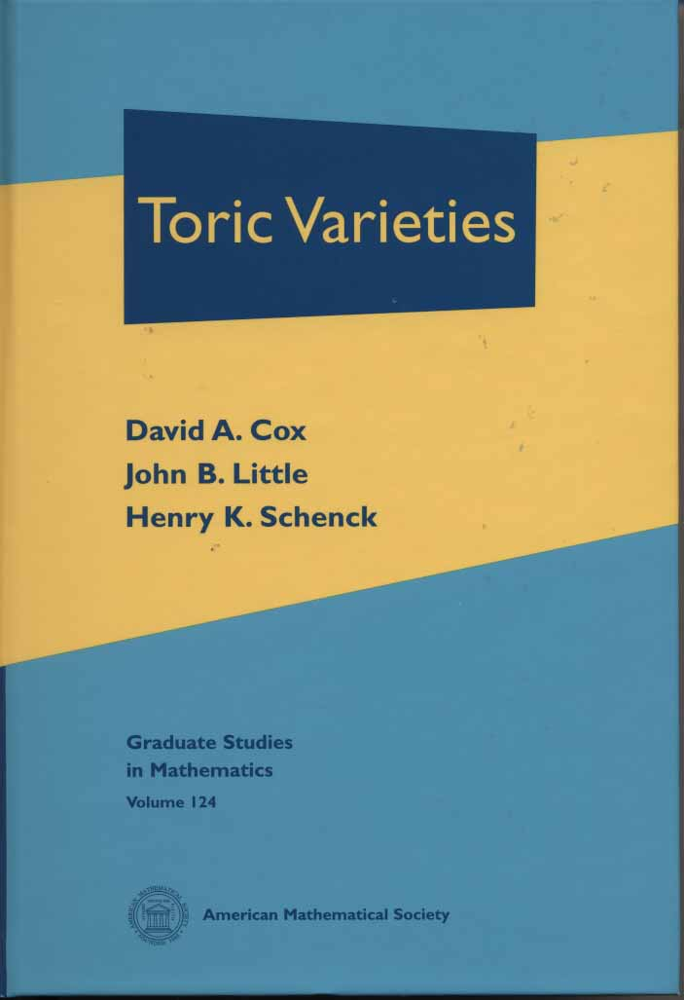
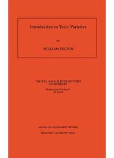
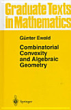

Abstract
Among the most accessible classes of algebraic varieties
are toric varieties and homogeneous spaces, specifically
Grassmannians. This is fortunate for these are also among
the most commonly encountered outside of algebraic geometry
within mathematics and in the applications of algebraic
geometry. Toric varieties in particular are currently
widely studied in algebraic geometry and its applications.
In this course we will introduce and develop the elementary
theory of these two
classes of varieties, emphasizing their fundamental
combinatorial nature while focusing on concrete examples
and explaining some of their applications.
Because of the elementary nature of these varieties,
the prerequisite will be graduate algebra, although
courses in commutative algebra and algebraic geometry
will be helpful.
Grading
I feel that in advanced graduate classes, the students get out of the
class what they put in.
Consequently, I do not assign regular homework to be collected and marked.
(But I will mention exercises, which are intended for you to fill in
gaps in the presentation, thereby learning a bit more.)
At the end of the term, students will present projects; I am starting a file
with some suggestions here.
Schedule
Toric Varieties
- Toric ideals
- Generation of toric ideals
- Groebner bases
- Computation
- Affine toric varieties
- Projective toric varieties
- Orbit decomposition and Limiting behavior
- Lattice Polytopes
- Algebraic-Combinatorial Geometric Dictionary
- Normality of Sturmfellian Toric Varieties
- Real projective toric varieties
- Irrational toric varieties
- Algebraic moment map
- Geometric combinatorics, lattices and fans
- Abstract Construction of Toric Varieties
- Cox/Delzant quotient construction
- Line bundles on toric varieties
- Toric Degenerations
Grassmannians
- Plücker embedding
- equations
- straightening laws
- Sagbi degeneration
- Degree of Grassmannian
- Schubert decomposition
- Wronskians
- Schubert calculus
|
|
Text Book:
I do not plan to follow a text book for this
class.
I will be writing notes throughout the semester, these are for part of a book I am
writing with Thorsten Theobald, Applicable Algebraic Geometry.
The sections on toric varieties will be written this semester, while the sections
on Grassmannians are being revised.
These will be made available as they are completed.
While there are several attractive introductions to toric varieties (see
below), I am afraid that I cannot recommend a single source for Grassmannians,
as there has not been a definitive treatment of these, except as chapters in various
books.
Other Sources:
|
I can recommend most highly a monumental new book
Toric Varieties by Cox, Little, and Schenck.
This is an encyclopedia of toric varieties, with a wealth of material, far more than
can be digested in a term.
This is and will be the definitive source for the subject for many years to come.
It is published by the American Mathematical Society
|
 |
|
Another popular book is Fulton's Introduction to Toric Varieties, by
Princeton University Press.
Its publication in the 1990's made the subject accessible and really opened up
the field.
It is not as elementary as the book by Cox, Little, and Schenck or that by Ewald, but it
is much shorter and gives a good introduction to the subject.
|
 |
|
This book by Ewald treats both the algebraic geometry of toric varieties, and the related
geometric combinatorics.
Many from combinatorics find it the right introduction to the subject.
|
 |
|
Last modified: Fri Aug 10 11:31:20 CST 2012

 Tuesdays:
Tuesdays: